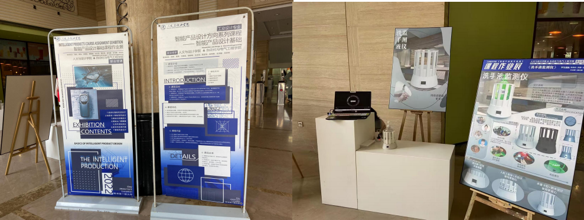
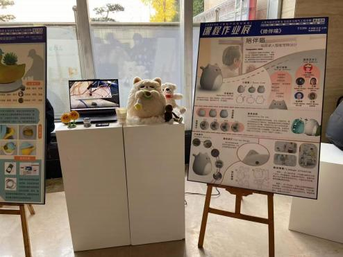
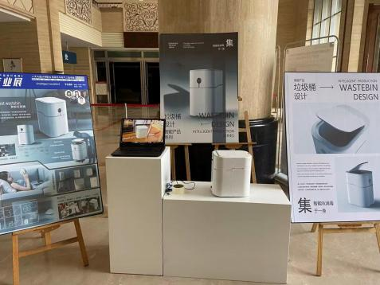

Innovation and Practice of Teaching Methods, 9(6), 36–39.
DOI: 10.12345/JXFFCXYSJ.V9I6.37632 ↗Research on the Construction and Implementation Effectiveness of an Interdisciplinary Talent Cultivation Model: Perspectives from Teaching Reform in the Intelligent Product Design Course Cluster
Research overview
This study focuses on developing an interdisciplinary talent cultivation model through the reform of a course cluster. The pilot brings together three courses: Fundamentals of Intelligent Product Design, Intelligent Home Appliance Design, and Intelligent Equipment Design.
The course team combines faculty expertise in automation, mechanical engineering, computer science and industrial design. It seeks to move beyond the limitations of isolated course reform by connecting curriculum development with interdisciplinary teaching and research.
A connected course cluster
Fundamentals of Intelligent Product Design
Intelligent Home Appliance Design
Intelligent Equipment Design
Interdisciplinary teaching & research
The model pursues two complementary directions: building a systematic engineering education framework, and exploring how interdisciplinary teaching and research teams can drive research innovation. Its overarching aim is to develop a transferable approach to interdisciplinary talent cultivation.
Selected course work
Student course projects presented through prototypes, exhibition boards and demonstrations. Select an image to view the original in full.



Course exhibition & student projects
Select an image to enlarge it. Use the arrow keys to browse and Esc to close.